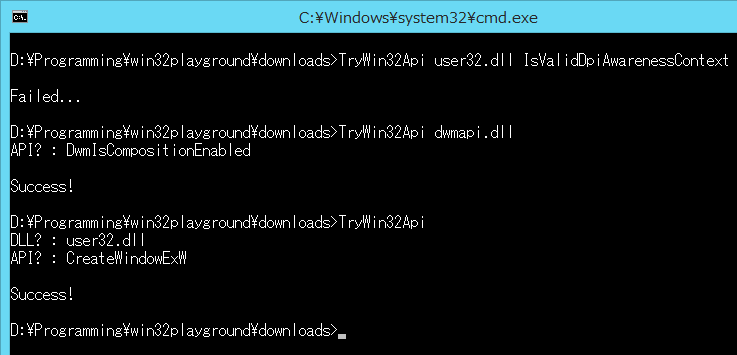
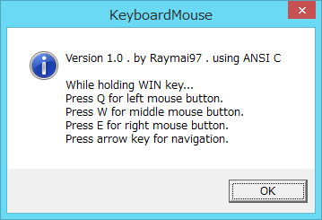
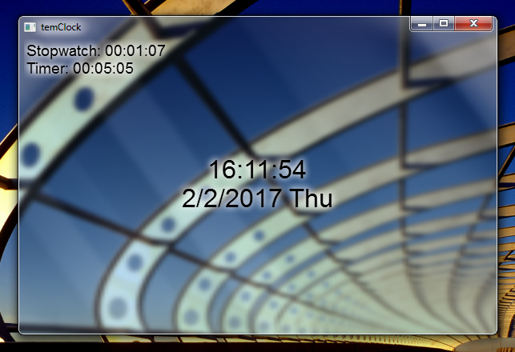
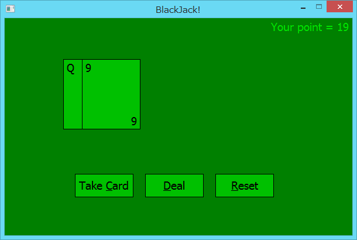
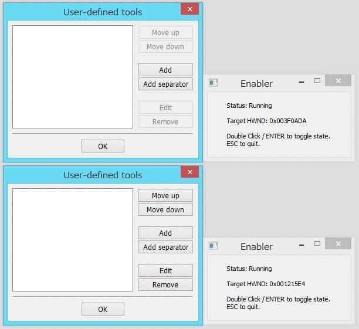

|  | Test if a Win32 API is available. Returns 0 if success, or 1 if failed. |
|  |
Control your mouse cursor using keyboard. For Windows Vista/7/8/8.1/10 users, it's recommended that you run this program as administrator. If not, it will stop working when your current application has higher privileges, such as Registry Editor. It uses WH_KEYBOARD_LL hook, so it won't work on Win9x. |
|  |
Amazing Win32 clock application. Super low resource consumption. Works on every Windows version since Win95. Featuring 3 modes (clock, timer and stopwatch) that can work simultaneously. Support setting font and timeout action (like executing program). As of v1.1, you can enable DwmExtendFrame to get Aero-Glass look. |
|  |
Yeah, it is that game where you get busted when your card total exceed 21. My first attempt to make a card game using modern C.
Update (29/10/2016): |
|  | Sometimes you might want to click the disabled button (and other controls). This tool will re-enable standard Win32 controls of the current active window. |